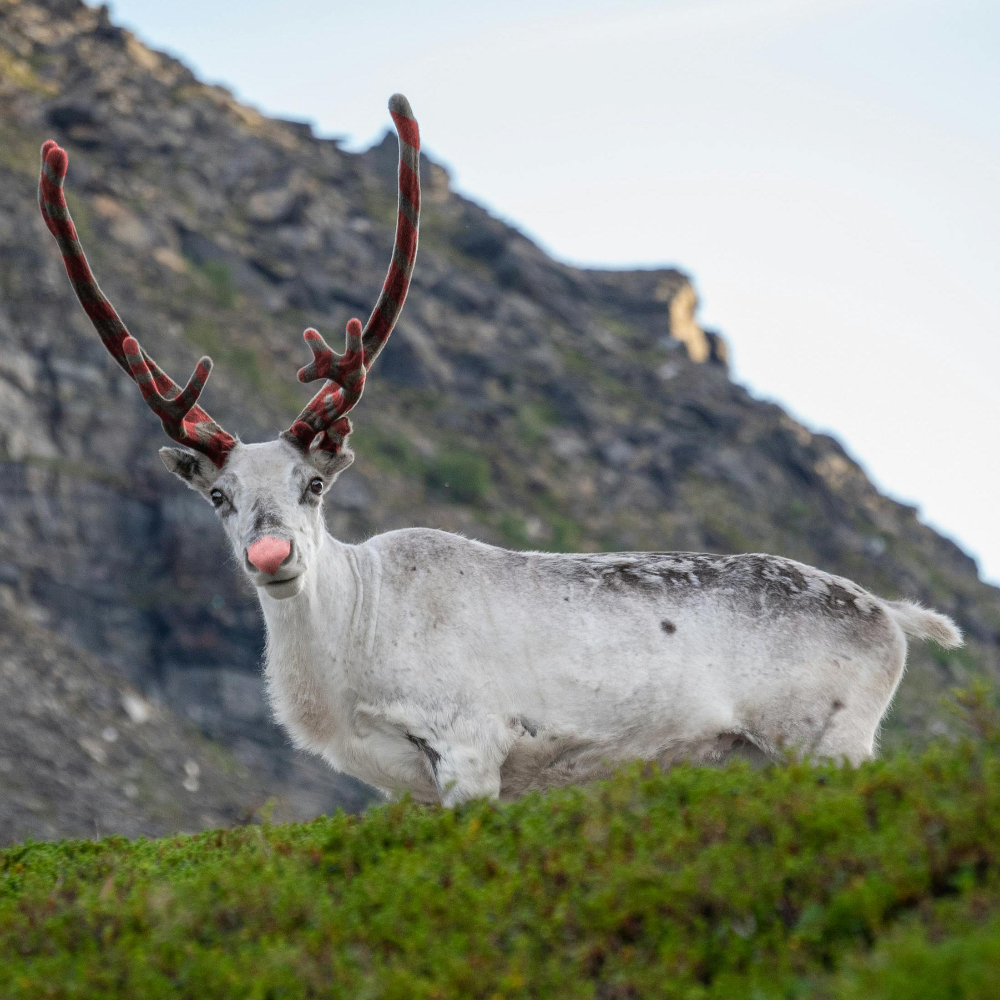

The Last Candy Cane Caribou
A Rankin/Bass themed location for a Merry Hexmas based on their 1982 animation of "The Last Unicorn". Where the mountains meet the coastline Haggard's Stronghold stubbornly resits the crashing waves of the Swirly Twirly Sea of Gumdrops.
The last candy cane caribou is somewhere in the North Pole, and is on a journey to find if she really is the last of her kind. This hex is her final destination where all her questions will finally be answered.
Roll a 2d8, re-rolling any that is an 8. These two numbers inform which hex the last candy cane caribou is currently in. Using this hex as an example, the hex number for Haggard's Stronghold is 707. If you rolled two 7's, then the candy cane caribou would be in this hex. The last candy cane caribou would already be at her destination!
⚠️ Currently a stub and is being further added to!

The last candy cane caribou.
The last candy cane caribou does not start in this hex and needs met elsewhere and escorted safely to here.
Terrain and Biome
Mountainous tundra forest meets a frigid coastline of waves crashing gumdrops and hard candy debris onto the shoreline.
Weather
Typically gray and dreary.
- Gray dreary. 1d8: rain if [1, 3], snow if [4, 6], else nothing.
- 1 mist, 2 light rain, 3 heavy rain
- 4 light snow, 5 light with big fluffy snowflakes, 6 heavy snow
- Same as 1.
- Partially Cloudy. 1d8: rain if [1, 2], snow if [3, 4], else nothing
- 1 mist, 2 light rain
- 3 light snow, 4 light with big fluffy snowflakes
- Heavy rain. 1d2: Thunderstorm if 1.
- Heavy snow. 1d2: Blizzard if 1.
- Clear skies. 1d2; Aurora Borealis if 1.
Rumors of Haggard's Stronghold
King Haggard has holed up in his stronghold, letting his kingdom rot as he wastes away.
His royal wizard has been known to sow mayhem with his magic's. There are various creatures or encounters for which his magic is the cause. Perhaps some of this magic could be learned or otherwise harnessed?
King Haggard is said to have captured all of the candy cane caribou, but only those with the sight can see them, so he claims. Everyone else thinks he's mad.
Random Encounters
1. Butterfly Pixie
2. Wandering Journeyman Wizard
You encounter a wandering wizard. Perhaps you both could help each other out?
3. Wandering bandits
4. Apparitions of Robin Hood and his Merry Men
You thought you were in for a fight with bandits. You were wrong. You're in for a fight with apparitions of bandits!
5. Wandering Eldritch Circus
- Manticore
- Midgard Serpent
- Dragon
- Satyr
- Unicorn
- Harpy
- If the Harpy was freed before and it did not get its revenge on Mommy Fortuna, then it will have come back to seek its revenge.
- Otherwise this is replaced by a Cthtulu, a Cthulhu-looking creature wearing a tutu.
6. Elder Harpy
7. Four-toed Walking Serpent

A Four-toed Walking Serpent represented as The Last Unicorn's Dragon
8. The Red Bull
The red bull is huge with an aura of hell fire. It is able to appear out of thin air and is sworn to its promise to gather all of the existing candy cane caribou to this candy coast.

"Cretan Bullsh" by Kim Holm, CC-BY 4.0.
The Haggard Red Bull
After the red bull is felled, King Haggard's soul will possess the red bull to create The Haggard Red Bull, a red monstrous minotaur fuming with Haggard's obsession.

"Minos the Red Bull" by Kim Holm, CC-BY 4.0.
Locations Nearby
Locations of interest.
The Boreal Forest
Good for shelter from the wind with ample amounts of wood for a fire. Although there are other mythical creatures out and about in this forest. They too are looking to survive.
The Boreal Forest.
Haggard's Stronghold
A large stronghold sits atop a cliff facing the Swirly Twirly Sea of Gumdrops.
There is a secret passage from within the stronghold to location of the captured candy cane caribou. Haggard knows it, but won't tell. There is a skeleton who is an oenophile within the halls of the stronghold. He seems to know the way, or at least mocks the adventurers with his supposed possession of this knowledge.

King Haggard's Stronghold from the 1982 animated film "The Last Unicorn".
King Haggard
King Haggard is holed up in his stronghold with his prince son Lir, their maid, and royal wizard. King Haggard is infatuated with the candy cane caribou and has worked to capture all of them he could within the confines of the candy coast below his castle perched cliff.

King Haggard from the 1982 animated film "The Last Unicorn".
The Wily Wizard's Warped & Writhing Wicked Willow
Nearby to the stronghold on another cliff on the coast is a huge overgrown willow tree. It is said that this willow tree was infused with a great deal of magic by the wizard who served King Haggard. If a creature disturbs this tree, its roots will shoot out and attempt to grapple the creature. The willow will then writhe and whomp the ground which will destroy the cliff where it and the creatures sit leaving them to fall into the cold crashing waters below. The willow, now released from its earthly prison, will wreak havoc upon the creatures that fell with it and the shoreline.
The willow tree swells in size from the water and is now a gargantuan threat that is speedy to boot with its many roots and limbs serving as multiple appendages. Further with all the water, it is resistant to fire.
The tree needs removed or led away from the water in order to shrink back to its original size and to become weak to fire again.
The willow possesses the ability to release a scream like that of a mandrake.

The Wily Wizard's Warped & Writhing Wicked Willow represented as "Tiamat" by Kim Holm, CC-BY 4.0.
The Candy Coast
The sands are the crushed shards of hard candy. Washed up swirly twirly gumdrops line the shore. This shore is beneath the steep cliff face where Haggard's Stronhold is perched and the Willow's Cliff.
The candy cane caribou are trapped within these tumultuous waters, unable to escape from fear of the red bull.
The red bull rests within a cave on this coast under Haggard's Stronghold.
Neighboring Hexes
| Direction | Adjacent Hex Location |
|---|---|
| North | Jaw-break Shore |
| Northeast | Mythic Rankin/Basstionland |
| Northwest | The Sea of Swirly Twirly Gumdrops |
| Southeast | King Kringle |
| Southwest | The Sea of Swirly Twirly Gumdrops |
| South | Frosty Woods |